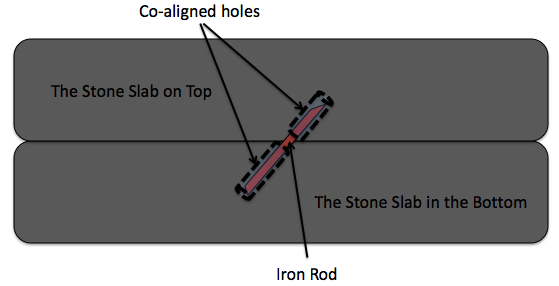
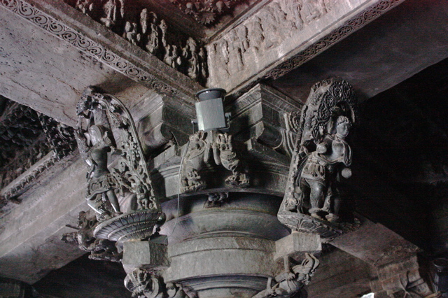
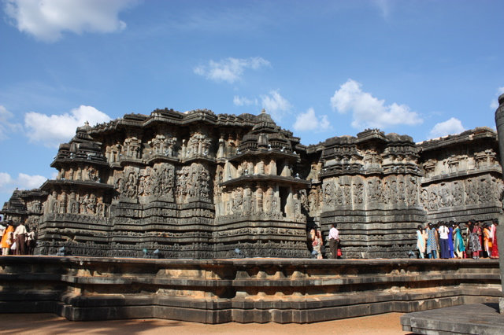
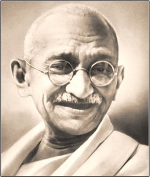

<?xml version="1.0" encoding="UTF-8"?>
<rss version="2.0"
	xmlns:content="http://purl.org/rss/1.0/modules/content/"
	xmlns:wfw="http://wellformedweb.org/CommentAPI/"
	xmlns:dc="http://purl.org/dc/elements/1.1/"
	xmlns:atom="http://www.w3.org/2005/Atom"
	xmlns:sy="http://purl.org/rss/1.0/modules/syndication/"
	xmlns:slash="http://purl.org/rss/1.0/modules/slash/"
	>

<channel>
	<title>Chronosynclastic Infundibulum &#187; history</title>
	<atom:link href="http://www.semanticoverload.com/category/history/feed/" rel="self" type="application/rss+xml" />
	<link>http://www.semanticoverload.com</link>
	<description>The world through my prisms</description>
	<lastBuildDate>Thu, 07 Apr 2011 17:36:17 +0000</lastBuildDate>
	<language>en-US</language>
	<sy:updatePeriod>hourly</sy:updatePeriod>
	<sy:updateFrequency>1</sy:updateFrequency>
	<generator>http://wordpress.org/?v=3.5</generator>
		<item>
		<title>Righteous Sufferes: Job and Harishchandra</title>
		<link>http://www.semanticoverload.com/2010/09/07/righteous-sufferes-job-and-harishchandra/</link>
		<comments>http://www.semanticoverload.com/2010/09/07/righteous-sufferes-job-and-harishchandra/#comments</comments>
		<pubDate>Tue, 07 Sep 2010 05:59:19 +0000</pubDate>
		<dc:creator>Semantic Overload</dc:creator>
				<category><![CDATA[history]]></category>
		<category><![CDATA[india]]></category>
		<category><![CDATA[religion]]></category>
		<category><![CDATA[book of Job]]></category>
		<category><![CDATA[Greece]]></category>
		<category><![CDATA[harishchandra]]></category>
		<category><![CDATA[Iran]]></category>
		<category><![CDATA[Judaism]]></category>
		<category><![CDATA[Markandeya Purana]]></category>
		<category><![CDATA[persia]]></category>

		<guid isPermaLink="false">http://www.semanticoverload.com/?p=775</guid>
		<description><![CDATA[My earlier post on the similarity in the stories of Orpheus and Adi Shankara inspired me to look for more, and naturally, I found many. I might, perhaps, write them all down some day. For now, here&#8217;s another one. This time it is between the Book of Job (from the Hebrew Bible) and the Markandeya [...]]]></description>
				<content:encoded><![CDATA[<p>My earlier post on the similarity in the stories of <a href="../../../2010/08/31/orpheus-and-adi-shankara/index.html">Orpheus and Adi Shankara</a> inspired me to look for more, and naturally, I found many. I might, perhaps, write them all down some day. For now, here&#8217;s another one. This time it is between the <a href="http://en.wikipedia.org/wiki/Book_of_Job">Book of Job</a> (from the <a href="http://en.wikipedia.org/wiki/Hebrew_Bible">Hebrew Bible</a>) and the <a href="http://en.wikipedia.org/wiki/Markandeya_Purana">Markandeya Purana</a> (a <a href="http://en.wikipedia.org/wiki/Hindu_scripture">Hindu text</a>).</p>
<p>The book of Job is about Job&#8217;s trials at the hands of Satan. Here is a paraphrased version of the story: Job is a pious man. Satan approaches God and says that Job is so pious mostly because God has kept him fairly well off. If God were to take away all of Job&#8217;s possessions, then Job would fail is his duties as a pious man. God accepts this challenge and takes all possessions away from Job. Despite this, Job remains pious. As his misfortunes pile up, Job finally caves in and questions God about this &#8216;injustice&#8217;. In response, God emphasizes his sovereignty in creating and maintaining the world. Finally, humbled by God&#8217;s chastising, Job turns speechless, giving up and repenting his previous requests of justice. To this, Job is restored to health, gaining double the riches he possessed before and having new children.</p>
<p>This is a typical story of a righteous sufferer. As you have probably guessed, there is a remarkably similar story in Markandeya Purana: the story of King <a href="http://en.wikipedia.org/wiki/Harishchandra">Harishchandra</a>. Similar to Job, King Harishchandra is an extremely righteous king who never goes back on his word and never lies. For various reasons (the reasons change with every retelling of the story) sage <a title="Vishwamitra" href="http://en.wikipedia.org/wiki/Vishwamitra">Vishwamitra</a>, once approached Harishchandra and informed him of a promise made by the king to donate his entire kingdom. True to his word, Harishchandra did so. The sage, proclaimed that for an act of donation to be completed, an additional amount as <em>Dakshina (honorarium)</em> had to be paid. Harishchandra, with no money in his hands, had to sell his wife and son. Eventually, he had to sell himself to a guard at a cremation ground.</p>
<p>The king, his wife, and son endured tremendous hardships. Thanks to an unfortunate sequence of events, the son dies, and his wife brings the son&#8217;s body to the cremation ground for the last rites. She is so poor that she could not even pay the taxes needed to cremate him. Even though Harishchandra realizes that his son is dead, his wife is begging him to help perform the last rites, and he is overcome is grief, he does not waver from his <em>dharma (duty)</em>. He asks for the sacred wedding necklace around his wife&#8217;s neck as payment of the tax. She willingly rests her head on a stone slab and asks Harishchandra to chop her head off for the necklace (the only way a woman may take her wedding necklace off while her husband is alive is in death). As he gets ready to chop her head the Gods appear and inform him that his righteousness was being tested. His son, wife, and kingdom is restored to him.</p>
<p>Theological import and motivations for these two myths aside, I am interested in how they came to be so similar. Like with the <a href="../../../2010/08/31/orpheus-and-adi-shankara/index.html">case of Orpheus and Adi Shankara</a>, there are too many similar elements (riches to rags, death of progeny, survival of the spouse, and so on). So I wager that this is no coincidence.</p>
<p>Let us take a closer look at the earliest known dates for these myths. The earliest <a href="http://en.wikipedia.org/wiki/Book_of_Job#Origin_and_textual_history">textual origins for the Book of Job is placed in 4th century BCE</a>. Whereas, the origins of Markandeya Purana is unknown, the earliest known <a href="http://en.wikipedia.org/wiki/Puranas#Origins">written form is placed in 3rd century CE</a>. Naturally, it is entirely possible that the puranas were an established oral tradition prior to this date. Besides, this still doesn&#8217;t provide us with a connection between the two myths.</p>
<p>Disclaimer: what follows next is entirely my hypothesis without scholarly research. Feel free to debase and/or ignore my speculations.</p>
<p>Looking at the geography between the Middle East and India, we see that the Persian empire occupied most of the space. Interestingly, there is a long history of <a href="http://en.wikipedia.org/wiki/History_of_Jews_in_Iran">Judaism in Persia</a>. The 4th century BCE (the period attributed to the written origins of the Book of Job) saw huge political turmoil in Persia thanks to <a href="http://en.wikipedia.org/wiki/Alexander_the_Great">Alexander the Great</a>. His empire reached into the greater India region. Given that some <a title="NHY Times article on kissing" href="http://www.nytimes.com/2006/02/14/opinion/14foer.html">anthropologists hypothesize that Alexander&#8217;s troops learned kissing from India and too it back to Greece</a>. It is not at all inconceivable that the story of a righteous sufferer traveled between the Jews in Persia and the Vedic/proto-Hindu people in India.</p>
<p>The question that still remains is which way did it travel? From India to Persia, or the other way around? If anyone has any hypothesis, clues, arguments, I would love to hear them. As of now, my speculation stops here.</p>
<p>UPDATE: The Book of Job seems to have been pre-dated by an ancient Sumerian text &#8220;<a href="http://www-etcsl.orient.ox.ac.uk/section5/tr524.htm">A man and his god</a>&#8220;. This gives us a good idea of the direction in which the story may have travelled, but that doesn&#8217;t explain the how the exegeses travelled. I have a hard time believing that the Jews came up with it all on their own simply because there aren&#8217;t many philosophical treatises written by the ancient Jewish people. The Greek and Indians, on the other hand, were a whole another story. My bet is that the exposition and exegeses associated with the Book of Job either came from Greece with Alexander the Great, or the story first travelled to India, and the philosophers in India gave it the philosophical mortar and this travelled back the Persia via Alexander&#8217;s army and made it back to the Jewish people.</p>
]]></content:encoded>
			<wfw:commentRss>http://www.semanticoverload.com/2010/09/07/righteous-sufferes-job-and-harishchandra/feed/</wfw:commentRss>
		<slash:comments>0</slash:comments>
		</item>
		<item>
		<title>When science went international</title>
		<link>http://www.semanticoverload.com/2010/09/04/when-science-went-international/</link>
		<comments>http://www.semanticoverload.com/2010/09/04/when-science-went-international/#comments</comments>
		<pubDate>Sat, 04 Sep 2010 21:06:36 +0000</pubDate>
		<dc:creator>Semantic Overload</dc:creator>
				<category><![CDATA[history]]></category>
		<category><![CDATA[science]]></category>
		<category><![CDATA[chemistry]]></category>
		<category><![CDATA[conference]]></category>

		<guid isPermaLink="false">http://www.semanticoverload.com/?p=771</guid>
		<description><![CDATA[The notion of international conferences are a commonplace anymore. But such was not the case over 150 years ago. The first international scientific conference was held on Sept. 3rd, 1860. Sarah Everts marks the 150 years of science as international discipline with this fascinating article in C&#38;E News. Here is an excerpt: When the 1860 [...]]]></description>
				<content:encoded><![CDATA[<p>The notion of international conferences are a commonplace anymore. But such was not the case over 150 years ago. The first international scientific conference was held on Sept. 3rd, 1860. Sarah Everts marks the 150 years of science as international discipline with this <a href="http://pubs.acs.org/cen/science/88/8836sci1.html">fascinating article in C&amp;E News</a>.</p>
<p>Here is an excerpt:</p>
<blockquote><p>When the 1860 conference began, chemistry was in a total state of  disarray. Although most chemists believed in atoms and molecules, nobody  could agree on molecular formulas. Even simple molecules such as water  were hotly debated: Most leading chemists at the time claimed that  water’s molecular formula was OH, and a minority argued that it was H<sub>2</sub>O.  More complex molecules were an even bigger battleground: At least 19  different representations of acetic acid were being used in textbooks of  that era.</p></blockquote>
<p>The motivation for the conference is obvious. Read the <a href="http://pubs.acs.org/cen/science/88/8836sci1.html">entire article</a> to understand its significance.</p>
]]></content:encoded>
			<wfw:commentRss>http://www.semanticoverload.com/2010/09/04/when-science-went-international/feed/</wfw:commentRss>
		<slash:comments>0</slash:comments>
		</item>
		<item>
		<title>Mahabali, Ramayan, Aryans, and Dravidians</title>
		<link>http://www.semanticoverload.com/2009/11/18/mahabali-ramayan/</link>
		<comments>http://www.semanticoverload.com/2009/11/18/mahabali-ramayan/#comments</comments>
		<pubDate>Wed, 18 Nov 2009 08:49:41 +0000</pubDate>
		<dc:creator>Semantic Overload</dc:creator>
				<category><![CDATA[history]]></category>
		<category><![CDATA[india]]></category>
		<category><![CDATA[religion]]></category>
		<category><![CDATA[aryan]]></category>
		<category><![CDATA[dravidian]]></category>
		<category><![CDATA[hindu]]></category>
		<category><![CDATA[mythology]]></category>

		<guid isPermaLink="false">http://www.semanticoverload.com/?p=356</guid>
		<description><![CDATA[What if the story of Mahabali and Ramayan were narrating the same episode in ancient Indian history? Remember that the story of Mahabali shows up in Vamana Purana whereas Ramayana is one of the Itihaasas. It is not surprising that the same incident would inspire two different mythological texts during two different periods for two different purposes. However, I claim that they are referring to the same chapter in ancient Indian history, that of the victory of Indo-Aryans over Dravidians. [...]]]></description>
				<content:encoded><![CDATA[<p>What if the story of <a title="The story of Mahabali" href="http://en.wikipedia.org/wiki/Mahabali">Mahabali</a> and <a title="Ramayana" href="http://en.wikipedia.org/wiki/Ramayana">Ramayan</a> were narrating the same episode in ancient Indian history? Remember that the story of Mahabali shows up in <a title="Vamana Purana" href="http://en.wikipedia.org/wiki/Vamana_Purana">Vamana Purana</a> whereas Ramayana is one of the<a title="Itihaasas in Hindu Mythology" href="http://en.wikipedia.org/wiki/Indian_epic_poetry"> Itihaasas</a>. It is not surprising that the same incident would inspire two different mythological texts during two different periods for two different purposes. However, I claim that they are referring to the same chapter in ancient Indian history, that of the victory of<a href="http://en.wikipedia.org/wiki/Indo-Aryan_peoples"> Indo-Aryans</a> over <a href="http://en.wikipedia.org/wiki/Dravidian_peoples">Dravidians</a>.<span id="more-356"></span></p>
<h3>The story of King Mahabali</h3>
<p>Mahabali was the king of <a href="http://en.wikipedia.org/wiki/Asura"><em>asuras</em></a> (who are a class of deites, and not demons; demons are called <a title="Rakshasa in Hindu Mythology" href="http://en.wikipedia.org/wiki/Rakshasa"><em>rakshasas</em></a> in Hindu mythology). The asuras ruled in Paatala loka (which is one of the 14 worlds, and is not hell; hell is called <a title="Naraka in Hindu Mythology" href="http://en.wikipedia.org/wiki/Naraka"><em>Narka</em></a> in Hindu mythology). Mahabali expanded his empire to all the 7 &#8216;lower&#8217; worlds and then invaded <em>Bhuloka</em> (or the earthly world): the lowest of the 7 &#8216;higher&#8217; worlds. Then he set his eyes on the remaining &#8216;higher&#8217; worlds which were ruled by <a title="Devas" href="http://en.wikipedia.org/wiki/Deva_(Hinduism)"><em>devas</em></a> (another class of deities). The king of devas, Indra, was worried by this expansion and realized that he was no match for Mahabali, so he approached lord Vishnu to save his kingdom. Vishnu then took the form of <em>vamana</em>, or a brahmin boy, and approached Mahabali for <em>Daana</em> or donation/alms. Vamana asked for three steps of land for him to live in. Mahabali agreed. Then Vamana grew so large that in one step he covered all of the higher worlds, and in another step he covered the Bhuloka, and asked Mahabali where he should place his third step. Realizing that he has been bested, Mahabali asked the third step to be put on his head and Vishnu placed his third step on Mahabali&#8217;s head sending him to Paatala.</p>
<h3>The story of Ramayana (hopelessly abridged)</h3>
<p>Prince Rama is sent on an exile with his wife and brother. They wander to south of Vindhya mountains and down south, king Ravana of Lanka abducts Rama&#8217;s wife. While searching for his wife he comes across a kingdom of monkeys (<em>vanaras</em>) and with their help he defeats Ravana and rescues his wife.</p>
<h3>Obvious connections</h3>
<p>So how do these stories point to Aryans and Dravidians? The most obvious references here are (a)the notion of Mahabali being from the &#8216;lower&#8217; world (possibly refering to south India) and the devas and Vishnu being from the &#8216;higher&#8217; workd (possibly refering to north India, and (b) Rama being an <em>Arya putra</em> from Ayodhya (in north India) and Ravana being from Lanka (in the south) and the Dravidian people being referred to as &#8216;monkeys&#8217;.</p>
<p>But we need more than such annotated instrumentation to make our case.</p>
<h3>Mahabali and Onam</h3>
<p>First, lets look at the case of Mahabali. King Mahabali is said to been a very just king and all of his subjects were said to have lived properously during his reign. Yet he is cast down back to Paatala. Also, Paatala could well refer to the state of Kerala (again, in the south) because the Hindu  festival of<a title="Onam" href="http://en.wikipedia.org/wiki/Onam"> Onam</a> celerbrated only in Kerala is a celebration of King Mahabali, <em>their</em> King Mahabali. It is worth noting that Hindus in Kerala celebrate the reign of an asura king who was cast down by Vishnu and interestingly, such a celebration is endemic to Kerala. It is not celebrated anywhere else!</p>
<h3>Vijayadashami in north and south India</h3>
<p>In north India the Hindu festival of <a href="http://en.wikipedia.org/wiki/Vijayadashami">Vijayadashami</a> marks the defeat of Ravana by Rama. However, in south India, the same festival marks the defeat of <a href="http://en.wikipedia.org/wiki/Mahishasura">Mahishaura</a> by Durga. Why such different reasons to mark the same festival? The only bridge between the two is the tale that Rama performed a sacrifice to Durga in the eve of the battle with Ravana. This suggests that these were really two different festivals in two different cultures and religions. They were later joined together by expansion of Hinduism into all of India.</p>
<h3>The legend of Vindhya and Agasthya</h3>
<p>The legend is that Vindhya mountains (which separates north and south India) started growing to such heights that it challenged the path of sun in the sky. So sage <a href="http://en.wikipedia.org/wiki/Agastya">Agastya</a>, in order to stop this growth asked Vindhyas to stoop down so that he may cross to down south. He also extracted a promise that Vindhyas would not grow any higher until he returned back north. But Agastya permanently settled in the south, and so the Vindhyas did not grow anymore.</p>
<p>The story (which is from the puranas, and is said to have occured before the itihaasas) can be interpreted as the northerners&#8217; (Aryans) conquest over the Vindhyas (much like the conquest of Mt. Everest) which paved way for migration to south India, thus triggering contact with the south Indian Dravidians.</p>
<h3>Genetic Markers, Caste System, and the North-South Divide</h3>
<p>A recently published <a href="http://www.timesonline.co.uk/tol/news/science/genetics/article6846424.ece">study of genetic profiles of Indian peoples</a> concludes a distinct divide among Ancestral North Indian (ANI) tribes and Ancestral South Indian (ASI) tribes with very strong evidence of enogamy. The study  also revealed that individuals descending from the ANI tribes tend to be in the &#8216;higher castes&#8217; and are genetically closer to europeans where as individuals descending from the ASI tribes tend to be in the &#8216;lower castes&#8217;. This again points to an Aryan-Dravidian divide that has been there for millenia, and the strong enogamy suggests conflict and competition between the groups, and looks like the Aryans won the struggle and encoded it into their mythology which was then shared with the Dravidians when they all became a single Hindu people, yet isolated from each other by caste barriers.</p>
]]></content:encoded>
			<wfw:commentRss>http://www.semanticoverload.com/2009/11/18/mahabali-ramayan/feed/</wfw:commentRss>
		<slash:comments>15</slash:comments>
		</item>
		<item>
		<title>Hoysala construction techniques in Halebidu</title>
		<link>http://www.semanticoverload.com/2008/12/18/hoysala-construction-techniques/</link>
		<comments>http://www.semanticoverload.com/2008/12/18/hoysala-construction-techniques/#comments</comments>
		<pubDate>Thu, 18 Dec 2008 14:15:10 +0000</pubDate>
		<dc:creator>Semantic Overload</dc:creator>
				<category><![CDATA[history]]></category>
		<category><![CDATA[india]]></category>
		<category><![CDATA[Carving]]></category>
		<category><![CDATA[Construction Technique]]></category>
		<category><![CDATA[Hoysala]]></category>
		<category><![CDATA[Stone]]></category>
		<category><![CDATA[Temple]]></category>

		<guid isPermaLink="false">http://www.semanticoverload.com/?p=284</guid>
		<description><![CDATA[Until recently my plans of seeing Halebidu seemed jinxed. I always started with the temple in Belur and by the time I was done with Belur it was too late to see Halebidu properly. I was told that Halebidu was much more impressive than Belur, but I hadn't had a chance to see it well until a few days ago.

A few days ago I visited the ruins of the temples in Halebidu. It was quite a sight to behold. And this, despite the fact that the temple was, in fact, incomplete, and had been vandalized by the Muslim invaders first, and the British later. Much like Belur, each carving in the temple tells a story. Each carving or sculpture deserves its own post. So I won't even attempt to describe my entire visit in this post. I might write up separate posts for select sculptures later, but for now, I'd like to focus on the techniques used by the Hoysalas to build the temples.]]></description>
				<content:encoded><![CDATA[<p>Until recently my plans of seeing <a title="Halebidu: Wikipedia" href="http://en.wikipedia.org/wiki/Halebidu">Halebidu</a> seemed jinxed. I always started with the temple in <a title="Belur: Wikipedia" href="http://en.wikipedia.org/wiki/Belur">Belur</a> and by the time I was done with Belur it was too late to see Halebidu properly. I was told that Halebidu was much more impressive than Belur, but I hadn&#8217;t had a chance to see it well until a few days ago.</p>
<p>A few days ago I visited the ruins of the temples in <a title="Halebidu: Wikipedia" href="http://en.wikipedia.org/wiki/Halebidu">Halebidu</a>. It was quite a sight to behold. And this, despite the fact that the temple was, in fact, incomplete, and had been vandalized by the Muslim invaders first, and the British later. Much like Belur, each carving in the temple tells a story. Each carving or sculpture deserves its own post. So I won&#8217;t even attempt to describe my entire visit in this post. I might write up separate posts for select sculptures later, but for now, I&#8217;d like to focus on the techniques used by the Hoysalas to build the temples.<span id="more-284"></span></p>
<h3>Foundation Stone Placement</h3>
<p>The Halebidu temple complex took over a 190 years to build. Interestingly, it was a mortar-less construction. The temples were built with layers of stone laid one upon the other such that they form a jigsaw with the stones&#8217; weight holding them in place. Take a look at the foundation stones:</p>
<div id="attachment_293" class="wp-caption alignnone" style="width: 646px"><p class="wp-caption-text">Foundation Stones</p></div>
<div id="attachment_285" class="wp-caption alignleft" style="width: 345px"><p class="wp-caption-text">Stone Slab Arrangement Schematic</p></div>
<p>Each set of stone slabs are placed one next to the other and in layers. On top of each stone slab a hole is drilled such that the holes in stone slabs that are one on top of the other are aligned together. Before laying the stone slab on top, an iron rod is place on the hole in the bottom slab and the stone slab on top is placed such that the iron rod fits into the top slab as well. This secures two adjacent stone slabs, and their weight keeps them in place.</p>
<h3>Lathe-turned Pillars</h3>
<p>The next are pillars. Lathe-turned cylindrical pillars are a distinctive feature of the Hoysala architecture (Mind you this is in the 12th century C.E!!). The prime movers for these lathes were horses and elephants. To give you an idea of the precision and the finish they managed to achieve, here is a picture:</p>
<div id="attachment_288" class="wp-caption alignnone" style="width: 437px"><p class="wp-caption-text">Lathe-turned Pillars</p></div>
<p>Note that the pillars are not monolithic. They are multiple squat cylindrical stone structures which have been held together using a technique that is similar to the one which holds the foundations stone slabs together. Now if that isn&#8217;t impressive enough, some of these pillars could actually rotate! Zooming into the head of such a pillar reveals this:</p>
<div id="attachment_289" class="wp-caption alignnone" style="width: 398px"><p class="wp-caption-text">Pillar Head</p></div>
<p>Notice how the pillar seems to be going into an inverted cylindrical receptacle. Between the pillar and the walls of the receptacle once rolled stone ball bearings, and that&#8217;s how the pillars rotated!</p>
<h3>Carvings on the Pillars</h3>
<p>Next come the carvings on the pillars. Looking at the carvings on the pillars I though that the squat cylinders which make up the pillar have the carving done on them first and are subsequently installed into place. However, this half done pillar convinced me otherwise:</p>
<div id="attachment_291" class="wp-caption alignnone" style="width: 650px"><p class="wp-caption-text">Incomplete Carving</p></div>
<h3>Statues on the Pillars</h3>
<p>The junction between the pillars and the roof are adorned with monolithic stone statues as seen below:</p>
<div id="attachment_294" class="wp-caption alignnone" style="width: 650px"><p class="wp-caption-text">Statues Adorning the Pillar</p></div>
<p>Again, the technique used to install these statues is very similar to the technique used to keep the foundation stones together. A clue to this is seen in a corner where the statue has been vandalized by the British (and now sits in the British museums), take a look:</p>
<div id="attachment_295" class="wp-caption alignleft" style="width: 310px"><p class="wp-caption-text">Vandalized Corner</p></div>
<p>See the square hold in the stone slab on the roof in the top left side of the photograph? A similar hole can be bound on the pillar where the base of the statue stood.</p>
<p>This implies that the statue was installed at the same time as the stone slabs were laid on the roof. Just imagine the logistics and coordination necessary to accomplish this across four pillars, four statues per pillar, and all of it simultaneously!</p>
<h3>General Techniques for Stone Carvings</h3>
<p>The stone carvings all over the temple follow a similar pattern. The smooth and polished stone slabs are put in place first as seen below:</p>
<div id="attachment_296" class="wp-caption alignnone" style="width: 644px"><p class="wp-caption-text">Starting with a blank Slate</p></div>
<p>On the blank slab the sculptures then carve a rough outline of the design they wish to realize. We see a glimpse of this process below:</p>
<div id="attachment_297" class="wp-caption alignnone" style="width: 650px"><p class="wp-caption-text">Carving the outline</p></div>
<p>After this begins the actual sculpting of the stone. Below is a partially done piece. The finished carving is to the left and the work-in-progress carving is to the right (duh!).</p>
<div id="attachment_298" class="wp-caption alignnone" style="width: 650px"><p class="wp-caption-text">Work-in-progess Carving</p></div>
<p>Using such techniques, the Hoysala constructed magnificent temples all around the Karnataka region. The twin temple in Halebidu was under construction for about 190 years (and still incomplete)! Despite this, its still quite a sight to behold. Look for yourself:</p>
<div id="attachment_300" class="wp-caption alignnone" style="width: 650px"><p class="wp-caption-text">Temple at Halebidu</p></div>
]]></content:encoded>
			<wfw:commentRss>http://www.semanticoverload.com/2008/12/18/hoysala-construction-techniques/feed/</wfw:commentRss>
		<slash:comments>11</slash:comments>
		</item>
		<item>
		<title>Gandhi&#8217;s Legacy</title>
		<link>http://www.semanticoverload.com/2008/09/02/gandhis-legacy/</link>
		<comments>http://www.semanticoverload.com/2008/09/02/gandhis-legacy/#comments</comments>
		<pubDate>Tue, 02 Sep 2008 05:38:57 +0000</pubDate>
		<dc:creator>Semantic Overload</dc:creator>
				<category><![CDATA[history]]></category>
		<category><![CDATA[india]]></category>
		<category><![CDATA[freedom]]></category>
		<category><![CDATA[Gandhi]]></category>
		<category><![CDATA[legacy]]></category>

		<guid isPermaLink="false">http://www.semanticoverload.com/?p=161</guid>
		<description><![CDATA[I have often wondered about the effectiveness of Mahatma Gandhi&#8217;s role in securing India&#8217;s freedom. Was it Mahatma Gandhi and other freedom fighters&#8217; struggle that secured India its freedom, or would sovereignty have been granted anyway? Of course, the high school history books would have none of this. They emphatically state that Gandhiji and others [...]]]></description>
				<content:encoded><![CDATA[<p><a href="../../../wp-content/uploads/2008/09/gandhi.jpg"></a></p>
<p>I have often wondered about the effectiveness of Mahatma Gandhi&#8217;s role in securing India&#8217;s freedom. Was it Mahatma Gandhi and other freedom fighters&#8217; struggle that secured India its freedom, or would sovereignty have been granted anyway? Of course, the high school history books would have none of this. They emphatically state that Gandhiji and others forced the Great British Empire into submission and gave us the free nation. But let&#8217;s not fool ourselves into lending authenticity to history books written under the heavy influence of caste and religion based politics. Lets take a closer look at what really happened. And lets not narrow our focus down to India, but look at world events are large.</p>
<p><span id="more-161"></span></p>
<p>For starts, I choose to dismiss the claim that if it hadn&#8217;t been for Gandhi and others, we wouldn&#8217;t have secured our freedom. Why? Because between 1940 to 1960 (or whereabouts) around 27 countries gained independence from the colonial power (source: <a href="http://en.wikipedia.org/wiki/Independence_Day">wikipedia</a>). Now that&#8217;s too large a number for it to be coincidental. There is definitely a pattern here, and pattern often follows causation. So what happened in the 30&#8242;s and 40&#8242;s that ended colonialism in such a dramatic fashion in over two dozen countries? Answer: World War II. The world war was such a severe strain and drain on the imperial forces that they could no longer had the economic, political, and military power to sustain the colonies. Consequently, they had to relent to the indigenous separatist movements, and at times even voluntarily give up on colonies (the latter happened with many countries in Africa; this explains why 30% of political boundaries in Africa are straight lines: because they were drawn on the map, not on the ground). Personally, I find this argument a lot more compelling that what the story that history books tell.</p>
<p>Natural question/accusation is: Does this diminish Gandhi&#8217;s legacy vis-a-vis free India? Ironically, I find myself saying &#8216;no&#8217;. The British may have given India its political identity, but it was Gandhi who gave India its cultural and social identity. His freedom movement gave people a sense of community, a sense of group identity. To a large extent, this is the reason why India is one of the most successful democracies in the world where as a large part of Africa is still struggling to establish themselves as a nation.</p>
<p>It is important to remember that the concept of a nation-state was imposed upon most colonies (on independence) by their colonial powers. But the people, for most part, were not ready to embrace it. The civil wars in Africa and Iraq typify that sociological resistance. But somehow it was different in India. Yes, there was civil unrest in India following its independence, but nothing crippling. And this was despite the fact that provinces in India were as different from each other as countries were in Europe. It took a tyrant to hold Shias, Sunnis, and Kurds in a united Iraq, whereas India has held its own with over a dozen religions, 50 languages, hundreds of disparate communities. How? Why? The answer is M.K. Gandhi. It is because Gandhi helped bind people together as Indians, he created the nation-state of India among everyone living there. Seldom has any individual made such an impact on such a diverse society.</p>
<p>So yes, Gandhi did deliver India its freedom, its true freedom. But not how the history books describe it. His legacy is much more palpable than dates and events in a book.</p>
]]></content:encoded>
			<wfw:commentRss>http://www.semanticoverload.com/2008/09/02/gandhis-legacy/feed/</wfw:commentRss>
		<slash:comments>20</slash:comments>
		</item>
		<item>
		<title>Zeitgeist</title>
		<link>http://www.semanticoverload.com/2007/09/23/zeitgeist/</link>
		<comments>http://www.semanticoverload.com/2007/09/23/zeitgeist/#comments</comments>
		<pubDate>Mon, 24 Sep 2007 02:59:51 +0000</pubDate>
		<dc:creator>Semantic Overload</dc:creator>
				<category><![CDATA[debate]]></category>
		<category><![CDATA[discussion]]></category>
		<category><![CDATA[history]]></category>
		<category><![CDATA[politics]]></category>
		<category><![CDATA[religion]]></category>
		<category><![CDATA[science]]></category>
		<category><![CDATA[society]]></category>
		<category><![CDATA[technology]]></category>
		<category><![CDATA[Uncategorized]]></category>
		<category><![CDATA[US]]></category>
		<category><![CDATA[video]]></category>
		<category><![CDATA[conspiracy]]></category>

		<guid isPermaLink="false">http://semanticoverload.gaddarinc.com/?p=121</guid>
		<description><![CDATA[Zeitgeist &#8212; The movie although a conspiracy theory, and may not all true, does have some sense of reality in it. I am the first admit that there are quite a few &#8216;facts&#8217; in the movie that are, well, just plain wrong. For instance, &#8216;Krishna&#8217; being a virgin birth being one of them. However, be [...]]]></description>
				<content:encoded><![CDATA[<p><a href="http://www.zeitgeistmovie.com/">Zeitgeist</a> &#8212; The movie although a conspiracy theory, and may not all true, does have some sense of reality in it. I am the first admit that there are quite a few &#8216;facts&#8217; in the movie that are, well, just plain wrong. For instance, &#8216;Krishna&#8217; being a virgin birth being one of them. However, be sure not to throw the baby out with the bath water.</p>
<p>The <a href="http://www.zeitgeistmovie.com/statement.htm">statement</a> on the website says:</p>
<blockquote><p>
Zeitgeist was created as a non-profit filmiac expression to inspire people to start looking at the world from a more critical perspective and to understand that very often things are not what the population at large think they are. The information in Zeitgeist was established over a year long period of research and the current Source page on this site lists the basic sources used / referenced. Soon, an Interactive Transcript will be online with detailed footnotes and links so exact sources and further research can be relayed.</p>
<p>&#8230;
</p></blockquote>
<p>Here&#8217;s the movie for your viewing. Note that the movie is 2 hours long, so make sure you have enough time to watch it. But I guarantee that you will have strong opinions about it one way or the other.<br />
Don&#8217;t forget to check out the <a href="http://www.zeitgeistmovie.com/clarifications.htm">Clarifications</a> (which dented my confidence in the authenticity of the &#8216;facts&#8217; in the movie), and the <a href="http://www.zeitgeistmovie.com/sources.htm">Sources</a> sections.</p>
<p>Without further ado, here&#8217;s the movie :)<br />
<embed style="width:400px; height:326px;" id="VideoPlayback" type="application/x-shockwave-flash" src="http://video.google.com/googleplayer.swf?docId=5547481422995115331&#038;hl=en" flashvars=""> </embed></p>
]]></content:encoded>
			<wfw:commentRss>http://www.semanticoverload.com/2007/09/23/zeitgeist/feed/</wfw:commentRss>
		<slash:comments>2</slash:comments>
		</item>
	</channel>
</rss>
